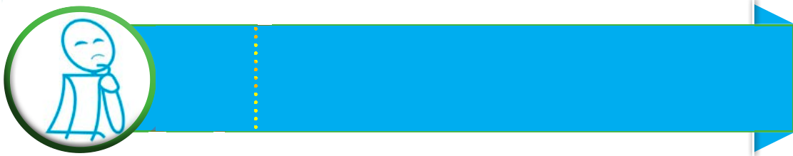

Chapter Four
Combustion
Introduction
Combustion is a common process in our everyday lives. In this chapter, you will learn about the meaning, causes and effects of combustion. You will also learn various ways to protect yourself from accidents that can occur due to combustion. Similarly, you will also perform simple experiments to investigate the importance of air (specifically oxygen) in combustion. The competencies developed will enable you to produce heat and light safely for various uses. It will also enable you to protect yourself and others from accidents caused by burning materials.

Concept of combustion
Combustion is a process in which a flammable substance reacts rapidly with oxygen. This reaction releases energy in the form of heat and light, often producing a flame. Flames are visible and feel hot during burning. For example, when firewood burns, it combines with oxygen. This reaction releases heat and light. Additionally, combustion produces carbon dioxide and water vapour. This process is essential in many activities. These include cooking food, melting metal and incinerating waste.